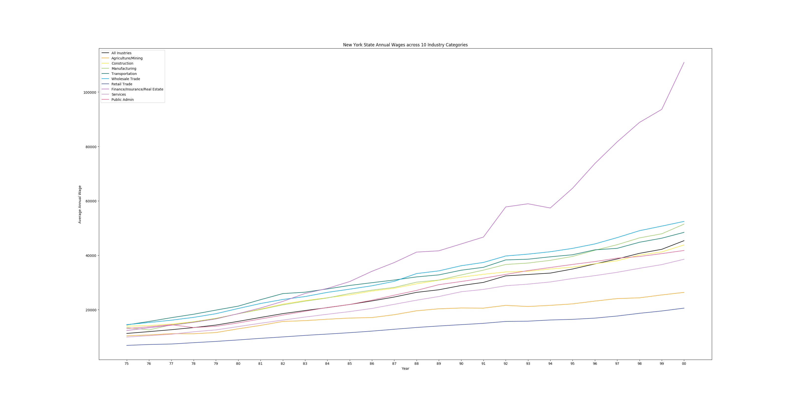
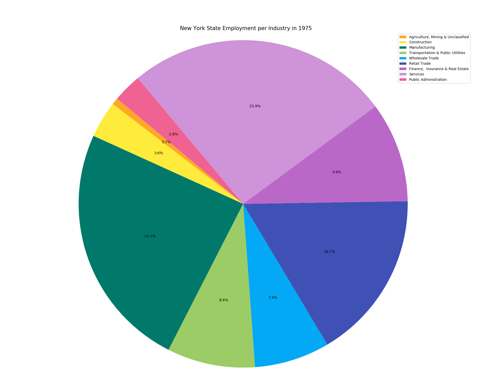
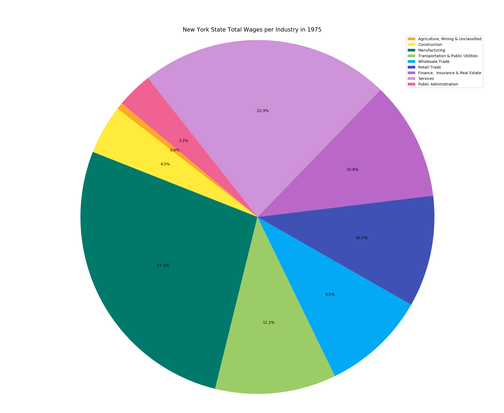

Write at least one paragraph to describe what your graph shows. Can you draw any conclusions by learning from the data? Can you draw any conclusions about the integrity of the data? Who might find your graphs useful?
I retrieved this dataset, Quarterly Census of Employment and Wages Historical Annual Data: 1975 - 2000, from data.ny.gov. It includes data about the average wages and average employment across several industries in New York State over 25 years. My data from the last assignment was limiting and didn't have enough data to make for an interesting analysis. This dataset, however, offers a very interesting view of employment in New York state, broken down by county. To scrub the data I made some simple changes such as removing unnecessary columns.
For this visualization, I only worked with the state-wide data. The first line chart shows a dramatic increase in Finance, Real Estate and Insurance wages over the 25 year timespan the dataset covers, with the other industries roughly following the same pattern in a general increase over time. What might have been a more interesting analysis is the comparison of employment in New York City versus the rest of the counties in New York, and I hope to return to that in a future assignment.
The limitations of this dataset come from the lumping of large subcategories with broad industries like "services," which I found vague and in many cases lacking inclusion. For instance, the Standard Industrial Classification System outlines the 10 categories as seen in this visualization, but because these classifications were made some years ago, they fail to capture industries like those in technology.
Additionally, the dataset only covers the 25 years from 1975-2000, which, to the best of my knowledge, were relatively economically stable. The two largest crises since the Great Depression were the OPEC oil crisis in the early 1970s and the 2008 recession, both of which occurred outside of the timespan of this dataset, which makes it somewhat uninteresting, as seen in the nearly straight lines in the first graph.

 